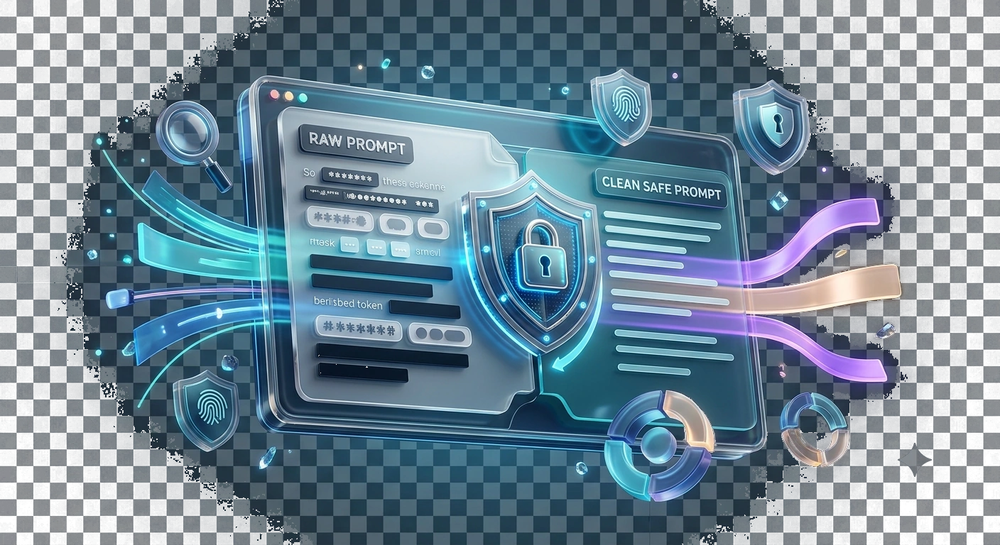

Paste only the text you are authorised to inspect
Test with a clearly fictional example email and API-key-shaped string, then review findings manually.
Sanitize sensitive information locally before sharing prompts or text.
Processed privately in your browser.
Detection catches patterns, not every secret or personally identifying detail.

Test with a clearly fictional example email and API-key-shaped string, then review findings manually.
Check a draft prompt for common secrets before sharing.
Automated detection cannot guarantee every sensitive value is found.
Test with a clearly fictional example email and API-key-shaped string, then review findings manually.
A prompt mentioning a customer's email and order number may need both masked before sharing with a third-party assistant. A tool may detect one pattern but overlook an unusual identifier.
Use the real tool above to verify the result. The example illustrates the workflow, not a guaranteed outcome.
A prompt mentioning a customer's email and order number may need both masked before sharing with a third-party assistant. A tool may detect one pattern but overlook an unusual identifier.
Check free-form addresses, credentials, named individuals and context clues after automatic redaction. Do not treat the absence of highlighted matches as proof of anonymity.

Detection catches patterns, not every secret or personally identifying detail.
Test with a clearly fictional example email and API-key-shaped string, then review findings manually.
A prompt mentioning a customer's email and order number may need both masked before sharing with a third-party assistant. A tool may detect one pattern but overlook an unusual identifier.
A prompt prepared for another AI service may contain email addresses, phone numbers, account references, customer names, internal project labels or private instructions. Some details can be replaced with placeholders without changing the question: "Write a reply to alice@example.com about invoice INV-4829" can become "Write a reply to [EMAIL_1] about [REFERENCE_1]" if those categories are detected and replaced. The goal is to preserve task context while reducing unnecessary exposure. Never treat a sanitizer's output as evidence that every sensitive item has been removed.
Automated detection works best on recognisable patterns. An email address has a typical structure; a person's nickname, unpublished product idea or unusual internal code may not. A privacy tool cannot understand every relationship or infer all secrets from natural language. After processing, manually read the output and look for dates, addresses, embedded access tokens, company plans and details that are sensitive because of their context. Do not assume that masking one visible identifier prevents someone from inferring identity from other clues.
If the interface produces a mapping table alongside sanitized text, decide whether that mapping should remain local. A reversible placeholder list can be useful when inserting the real details back into an approved workflow, but it is itself sensitive because it links placeholders to originals. Do not paste the mapping alongside the sanitized prompt into the third-party service. Keep any downloaded mapping file in an access-controlled location and delete copies when no longer necessary under your data-handling policy.
A useful review test is to compare the original and sanitized text sentence by sentence. The instructions should still make sense after masking: "draft a polite reminder" should remain clear, but personal identifiers should not survive where replacement was requested. When a replacement creates ambiguity, add neutral descriptors such as "customer" or "supplier" instead of restoring names. Sanitizing data does not grant permission to transmit confidential records to an outside provider, even with placeholders.
Phone numbers appear in many country formats and can be confused with tracking codes. An aggressive detector might replace harmless measurements; an incomplete detector might miss an international number without a country prefix. Verify which patterns the selected version recognises, and treat false positives or false negatives as review signals. For legal, medical or high-security data, a browser text utility is only an aid to a broader redaction process. Apply organizational review and avoid exposing highly sensitive material in public examples or bug reports.
A prompt may include an apparently harmless sample like "our warehouse is the only store beside Building 12". If that location is confidential or indirectly identifies a person, pattern-based replacement may leave it untouched. Make a separate pass looking for contextual identifying clues: exact job titles, unusual dates, contract IDs and combinations of attributes. A sanitizer reduces exposure of patterns it recognises; human review must decide whether the remaining facts reveal sensitive operational context.
Suppose a draft prompt contains an email address, a phone number and an internal client code. Removing the email alone may still leave the person identifiable because the remaining details can be combined. Inspect the sanitised preview and manually generalise distinctive project names, financial figures and addresses before copying it to an outside service. Pattern matching may miss novel identifiers or over-mask innocent text, so a “sanitised” label is not a guarantee of anonymity. Keep confidential keys and passwords out of prompts entirely rather than assuming any replacement algorithm will catch every secret.
No. Unusual keys, personal stories and context-dependent disclosures can escape pattern-based detection.
Yes. Job role, location, transaction details and rare events can identify a person even when obvious names and emails are removed.
No. Custom codes and indirect clues may not follow a known pattern, so manual review remains essential.
No. Unusual keys, personal stories and context-dependent disclosures can escape pattern-based detection.
Yes. Job role, location, transaction details and rare events can identify a person even when obvious names and emails are removed.
No. Custom codes and indirect clues may not follow a known pattern, so manual review remains essential.
Avoid entering secrets in the first place. Detection can fail, and copied drafts or browser history may persist.